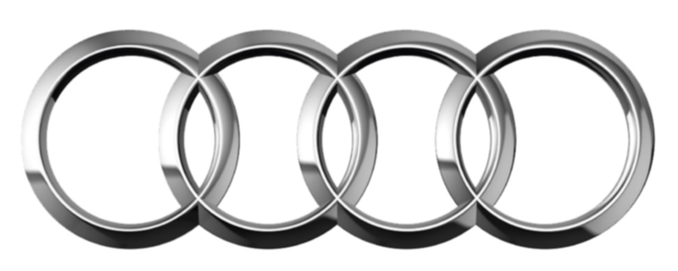

AUDI

По-русски: Ауди
Категория бренда: Немецкие автомобили
Год основания: 1909
Основатели: Аугуст Хорьх
Количество моделей: 41
Принадлежит: Volkswagen AG
Модели Audi
A1
A1 CITYCARVER
A3
A4
A4 ALLROAD QUATTRO
A5
A6
A6 ALLROAD QUATTRO
A7
A8
A8 L EXTENDED
A8 L SECURITY
E-TRON
Q2
Q3
Q4 E-TRON
Q5
Q7
Q8
R8
RS Q3
RS Q8
RS3
RS4
RS5
RS6
RS7
S3
S4
S5
S6
S7
S8
SQ2
SQ5
SQ7
SQ8
TT
TT OFFROAD
TT RS
TTS